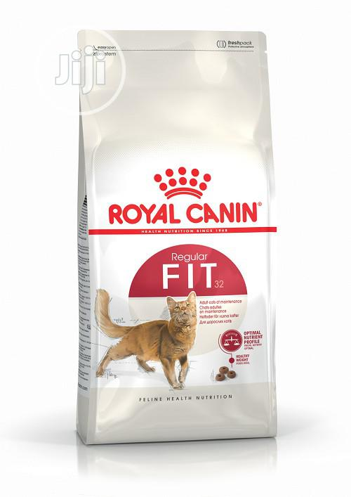
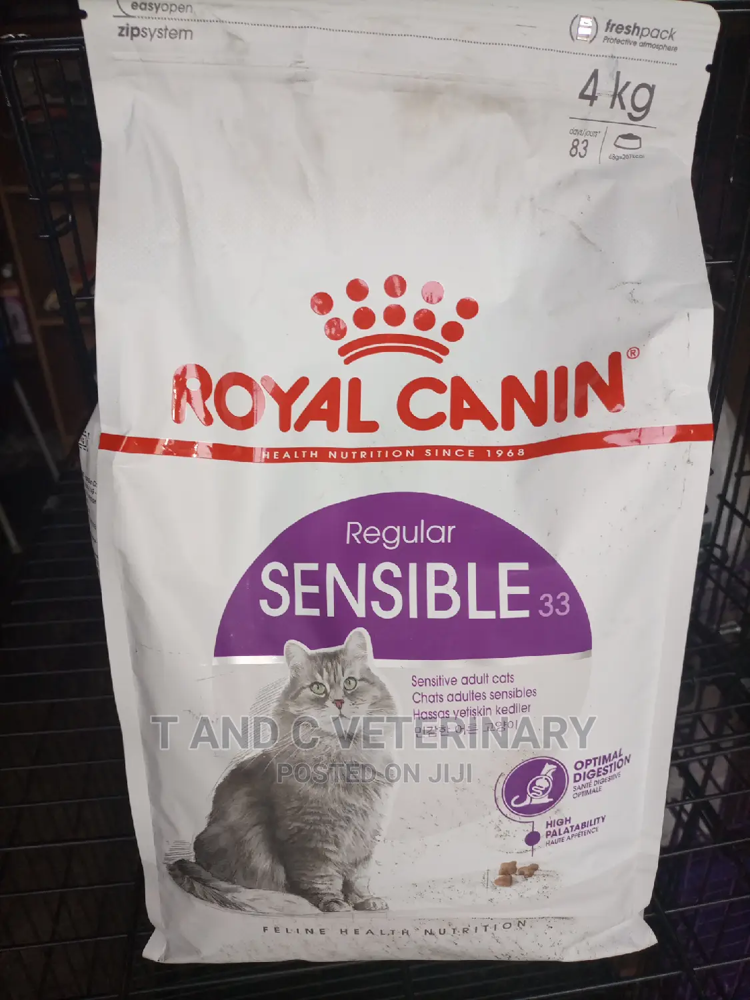
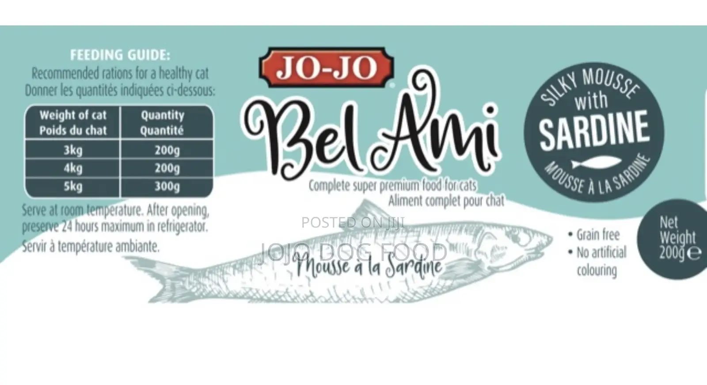
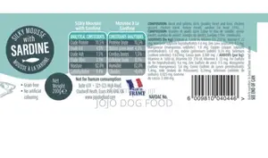
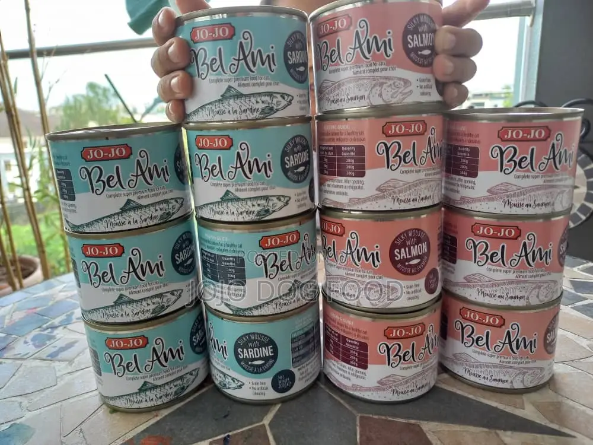

Our Services
- FEEDS
- VET
- DURGS
LIST OF FEEDS WE HAVE:
- ROYAL CANIN® Fit 32 is suitable for adult cats between 1-7 years old, it's been specially designed to meet all of your cat's nutritional requirements for supporting and maintaining the healthy situation that your cat is currently in.
- Royal Canin Cat Food Fit 4kg
- ₦ 55,000
- ROYAL CANIN® Fit 32 is suitable for adult cats between 1-7 years old, it's been specially designed to meet all of your cat's nutritional requirements for supporting and maintaining the healthy situation that your cat is currently in.
- Royal Canin Sensible Cat Food 4kg
- ₦ 60,000
 
- Excellent Nutrition for your lovely Pet, a high-quality Protein Source. Crafted to perfection, JOJO BEL AMI Sardine mousse Cat food has you covered. This super premium cat food isn't just a meal, it's a culinary experience.
- JOJO Bel Ami Cat Food With Sardine 200g X 12
- ₦ 27,300

OUR VET SERVICES
WE GIVE FREE VET SERVICES FOR 4MONTH IF YOU GET A CAT FROM US
NOTE: YOU ARE PAYING FOR DRUGS ONLY THE SERVICESES ARE FREE!